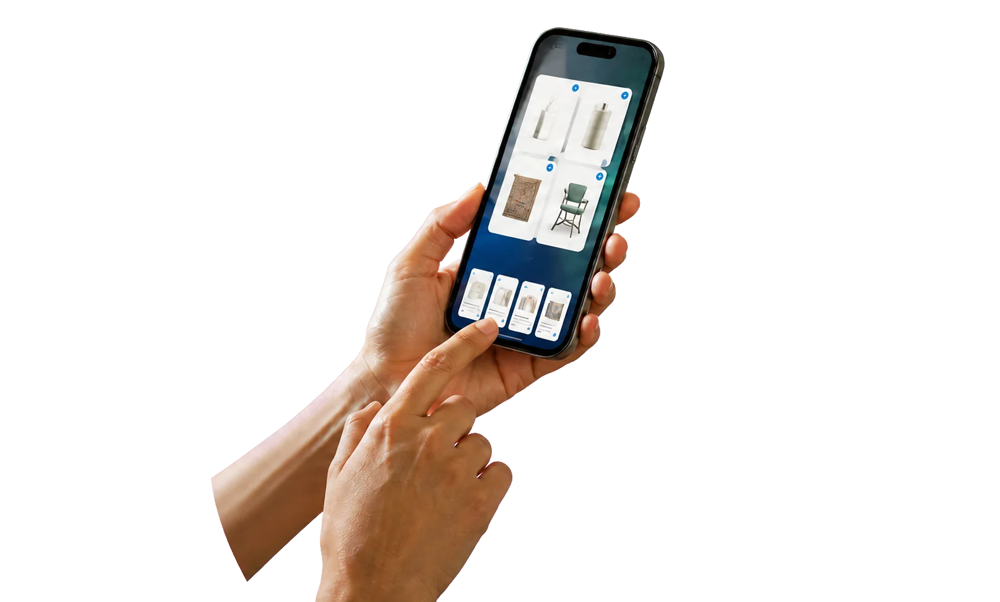
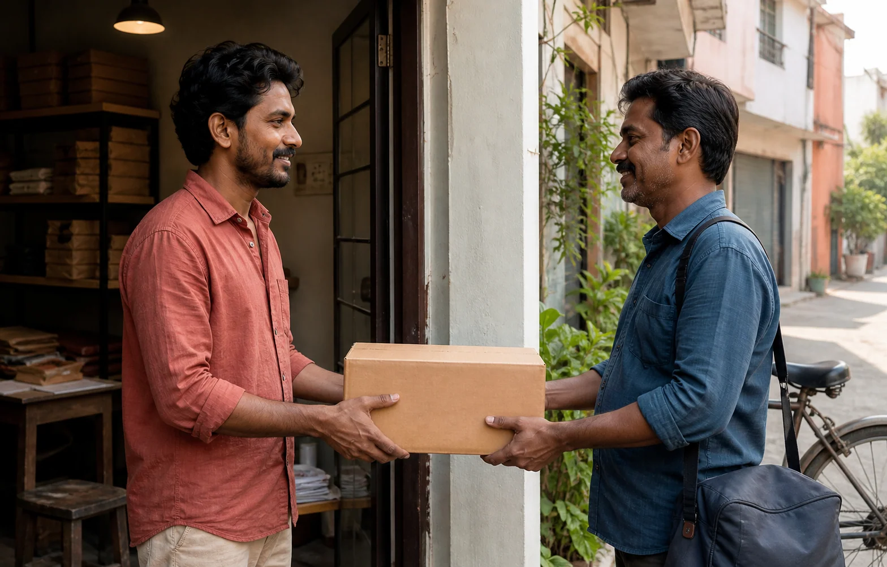

Double-digit monthly growth across participating brands
Providing a low-cost
and sustainable
e-commerce channel
for brands
Creating a more sustainable commerce ecosystem for D2C brands through lower commissions, wider digital visibility, connected logistics infrastructure and growth support across India.

Your brandonboards
Commerce
apps
apps
Discovery
Connected
logistics
logistics
Growth
support
support
How the network
opens up
- 01Multiple commerce apps
- 02Connected logistics
- 03Better profitability
- 04Growth and onboarding support
D2C on ONDC,
by the numbers
Signals from brands participating across the network.Figures retained from the supplied page; source and date verification required before publication.
Sellers across electronics, grocery, beauty, wellness and lifestyle
Branded products priced lower than other e-commerce platforms
Channel commission on average, improving brand profitability
Warehousing and logistics infrastructure enabling scalable fulfilment
Growth in demand across leading buyer apps including Bajaj Finserv, Hamaramall and One India Mall
Active across buyer apps and brands
Bajaj FinservHamaraMallPortronicsRenéeZilibuyDigiHaatOne India MallMystoreSnapdealBajaj Markets
Digital retail in India has grown rapidly, but participation remains uneven.
While larger brands benefit from scale, visibility and distribution leverage, many emerging and regional businesses continue facing structural barriers to sustainable growth.
As competition intensifies, sustainable growth increasingly depends on improving efficiency across the commerce value chain, not just increasing visibility.
Five barriers keep the route fragmented.
- Rising customer acquisition costs
Paid acquisition keeps eroding already thin D2C margins across every category.
- High commission-led marketplace models
Platform fees absorb a disproportionate share of revenue on every order fulfilled.
- Fragmented fulfilment and logistics operations
No single partner covers India end-to-end without significant operational trade-offs.
- Limited access to scalable digital discovery
Smaller and regional brands stay invisible despite genuine, growing consumer demand.
- Operational dependence on a limited number of platforms
Risk concentrated in 2 to 3 marketplaces leaves every brand highly exposed.
One integration. Many storefronts. Better economics.
Brands list once and reach customers across multiple commerce platforms, with shared logistics and lower costs to participate.
Scroll horizontally or use the previous and next chapter buttons to explore four connected benefits.
Access to Multiple Commerce Apps
Brands sell across multiple shopping apps through a single ONDC integration.
- Reach customers across different commerce platforms
- Reduce dependence on a single marketplace
- Increase product visibility and customer reach
Connected Logistics Support
Access delivery and fulfilment partners through shared network infrastructure.
- Use multiple logistics providers easily
- Improve delivery reach across cities and regions
- Scale operations without managing separate integrations

Better Profitability
Lower participation costs help brands grow more sustainably on every order.
- Reduce platform and operational costs
- Improve margins on every order
- Build more efficient digital growth models
Less frictionMore room to grow
Growth and Onboarding Support
ONDC supports brands through the journey of joining and scaling on the network.
- Onboarding assistance and catalogue support
- Marketing collaborations and buyer app partnerships
- Listing support for emerging and growing brands
Chapter 1 of 4: Access to Multiple Commerce Apps
Join the retail commerce network
Whether you are a brand, a logistics partner or a technology builder, there is a role for you on ONDC.